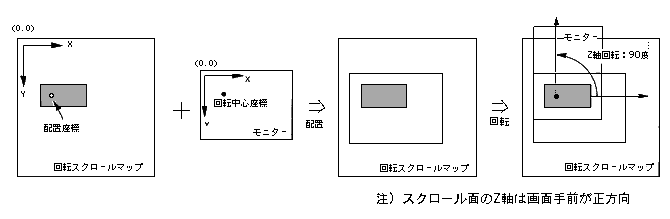

Return to previous page | Return to menu | Go to next page
void
Scroll function
RBG placement coordinate set
void slLookR(x , y)
FIXED x ;
FIXED y ;
x The x component of the rotation scroll arrangement coordinates (scroll coordinate system) y The y component of the rotation scroll arrangement coordinates (scroll coordinate system)
Set the coordinates of the rotation scroll screen.
Placement coordinates refer to a point on the scroll map.
The display position of the rotary scroll screen is determined by arranging the monitor so that the rotation center coordinate overlaps the arrangement coordinate.
For the parameter, substitute the XY coordinate value corresponding to the scroll coordinate system.
None
The display position of the rotary scroll is determined by placing a monitor with the rotation center coordinates as the reference point in the arrangement coordinates on the scroll map.
The function “slDispCenterR” is used to determine the rotation center coordinates of the rotary scroll.
Refer to the figure below for the relationship between rotation and arrangement.

Note) The Z axis of the scroll surface is forward in front of the screen.
Reference: Chapter 8 Scroll
slLookR